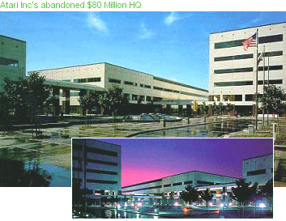

|
Published
on 01/08/87, SAN JOSE MERCURY NEWS
ATARI
CORP. TO INTRODUCE IBM CLONE
Atari Corp. will plunge into the
$11.7 billion market for IBM-compatible personal computers by
introducing a $499 machine at the Consumer Electronics show today in Las
Vegas, Nevada.
The Atari computer, which one
analyst called a low-cost alternative to other IBM-compatible personal
computers, will have a 5 1/4-inch floppy disk drive and 512 kilobytes of
internal memory, expandable to 640 kilobytes, according to an Atari
spokesman. The $499 price does not include a monitor.
Published
on 01/29/87, SAN JOSE MERCURY NEWS
ATARI'S
SALES SOAR 80% ON COMPUTERS, GAMES
Atari Corp.'s revenues soared in
1986 on strong sales of its personal computers and video game systems.
The Sunnyvale company, which went public last year, reported preliminary
fourth-quarter sales of $91 million, up 40 percent from $65 million in
the same period a year earlier. Estimated annual sales rose 80 percent
to $256 million in 1986 from $142 million in 1985. Atari did not give
preliminary estimates of its profits.
Published
on 02/19/87, SAN JOSE MERCURY NEWS
ATARI
DENIES DELAY IN COMPUTER SHIPMENT
Atari Corp. of Sunnyvale denied
Wall Street rumours Wednesday that it would delay shipping its recently
announced IBM- compatible personal computer. Gary Tramiel, a vice
president of Atari, said the company still intends to ship the product
in June or July. At one point Wednesday, Atari stock was down $4.25 a
share, at $23.50, when trading was halted on the American Stock Exchange
because of an imbalance of buy and sell orders. After trading resumed,
Atari closed at $26.63 per share, down $1.13 per share,
Published
on 02/21/87, SAN JOSE MERCURY NEWS
VIDEO
GAME, COMPUTER SALES GIVE ATARI'S PROFITS
A BOOST
Atari Corp. of Sunnyvale,
benefiting from robust sales of video games and computers this past
Christmas, said Friday it earned $20.4 million on operations during its
fourth quarter ended Dec. 31. That compares with $2.3 million in
operating profits for the fourth quarter of 1985.
Net income for the fourth
quarter totalled $23 million, or 87 cents a share, a 54 percent increase
from earnings of $14.9 million, or 64 cents a share, during the fourth
quarter of 1985. Atari had fourth-quarter sales of $92.
Published
on 03/21/87, SAN JOSE MERCURY NEWS
ATARI
WANTS TO RAISE FUNDS
Atari Corp. has asked the
Securities and Exchange Commission to approve a proposed public offering
of $75 million in convertible subordinated debentures. Proceeds from the
offering, which will be underwritten by Paine Webber Inc., will be used
for working capital and acquisitions, the Sunnyvale- based maker of
low-priced computers said. The filing comes four months after Atari
raised $51 million in an initial public stock offering.
Published
on 03/25/87, SAN JOSE MERCURY NEWS
COMMODORE,
ATARI SETTLE LEGAL BATTLE
Atari Corp. and Commodore
International Ltd., rivals in the personal computer business, said
Tuesday they settled their long-running litigation for undisclosed
terms. The litigation began in 1984
after a small Silicon Valley company called Amiga Inc. jilted Atari and
began working with Commodore.
Published
on 03/26/87, SAN JOSE MERCURY NEWS
ATARI,
COMMODORE SETTLE
Atari Corp. and Commodore
International Ltd., rivals in the personal computer business, settled
their long-running litigation over the Amiga computer for undisclosed
terms. The litigation began in 1984 after a small Silicon Valley company
called Amiga Inc. jilted Atari and began working with Commodore. Amiga
developed the Commodore computer that bears the Amiga name, and
Commodore acquired the company that year.
Published
on 04/07/87, SAN JOSE MERCURY NEWS
TRAMIEL
FAN JOINS ATARI AS NEW EXEC
"I'm kind of a Jack Tramiel
groupie," says J.J. "Jerry" Brown, Atari Corp.'s newest
vice president and general manger of the Sunnyvale-based computer
maker's U.S. operations.
In Brown, Tramiel, a
controversial figure who has put Atari back in the black since
purchasing it in 1984, lands a seasoned computer executive -- as well as
a fan. "I think Jack is one of the great names in the computer
industry."
Published
on 04/27/87, SAN JOSE MERCURY NEWS
ATARI
TAKES AIM AT U.S. COMPUTER MARKET
Atari Corp. is trying to prove
that a computer company can come home again. Atari concentrated on
selling overseas when it introduced its first computers in 1985, but now
the firm wants to bolster its tiny share of the U.S. computer market.
Published
on 04/27/87, SAN JOSE MERCURY NEWS
ATARI
HASN'T PULLED THE PLUG ON GAMES
Atari is shedding its skin and
turning into a personal computer company. But the change is hardly
complete; last year, one of every three dollars Atari received in U.S.
revenues came from the sale of video games.
That's a far cry from the early
1980s, when the video game boom made Atari one of America's
fastest-growing companies. That bubble burst, leaving Atari scrambling
to develop new products. Still, the firm's video game business is too
large to abandon.
Published
on 05/02/87, SAN JOSE MERCURY NEWS
ATARI
POSTS HIGHER EARNINGS
Atari Corp. of Sunnyvale
reported Friday higher profits and sales for its first quarter ended
April 4. Its operating income was $11.9
million, up 160 percent from $4.6 million of the year-ago quarter. On a
per-share basis, its operating income was 41 cents, up 116 percent from
the 19 cents of the year-ago quarter.
Published
on 06/21/87, SAN JOSE MERCURY NEWS
ANATOMY
OF A DEAL
HOW FORD AEROSPACE WAS SOLD ON SAN JOSE HEADQUARTERS

Thanks to three out-of-towners,
San Jose's biggest redevelopment flop has turned into one of its biggest
successes. But last fall, that flop -- the
abandoned Atari complex in North San Jose -- was nothing but a
humiliating problem for Los Angeles-based developer Lew Wolff. An $80
million, 546,000-square-foot problem.
Published
on 06/28/87, SAN JOSE MERCURY NEWS
LOYAL,
PERSISTENT ATARI USERS TAKE THEIR COMPUTERS PERSONALLY
AT THE World of Atari show held
recently at the Santa Clara Convention Centre, Atari users gathered to
see new Atari products, talk with Atari executives and generally circle
the wagons against users of the IBM Personal Computer and Apple
Macintosh who so often attack them for their taste in personal
computers.
Atari users are kind of a
throwback to the days when using a personal computer was, well, more
personal.
Published
on 07/01/87, SAN JOSE MERCURY NEWS
MUSICIANS
UPBEAT ABOUT ATARI'S ST OVERTURES
Jack Tramiel in a rock band? To
heat up sales, the rejuvenator of Atari Corp. probably would be happy to
pick up an electric guitar. For the moment, he doesn't have to. Tramiel
will settle for selling Atari's ST personal computer to musicians. And musicians are buying. Unable
to pry its way into big- name computer retailers, Atari is now targeting
musical instrument stores to carry its low-priced computers.
Published
on 08/04/87, SAN JOSE MERCURY NEWS
ATARI
GENERAL MANAGER REPORTEDLY QUITS COMPANY
J.J. "Jerry" Brown has
left his position as Atari Corp.'s general manager of U.S. operations. A veteran of International
Business Machines Corp., Brown was Atari's point man in the Sunnyvale
company's current assault on the American personal computer market.
Published
on 08/07/87, SAN JOSE MERCURY NEWS
ATARI'S
REBOUND CONTINUES
Atari Corp., the Sunnyvale maker
of personal computers and video games that has staged one of the
computer industry's more spectacular comebacks over the past couple of
years, reported Thursday higher profits and sales for its second
quarter.
The company said net income for
the quarter ending July 4 was $13.5 million, up 39 percent from $9.7
million for the same period last year. On a per-share basis, its net
income was 23 cents, up only 5 percent from last year's 22 cents
Published
on 08/24/87, SAN JOSE MERCURY NEWS
ATARI
BUYS FEDERATED ELECTRONICS STORES
Providing itself with a retail
chain to sell its computers, Atari Corp. on Sunday agreed to buy the
Federated Group Inc. for $67.3 million in cash.
The Sunnyvale-based maker of
computers and video games is making its first major acquisition since
Jack Tramiel, a home computer pioneer, bought the company from Warner
Communications Inc. in 1984 and returned it to profitability.
Published
on 08/24/87, SAN JOSE MERCURY NEWS
ATARI
TO PURCHASE CHAIN OF RETAIL STORES
Providing itself with a retail
chain to sell its computers, Atari Corp. on Sunday agreed to buy the
Federated Group for $67.3 million in cash. The Sunnyvale-based maker of
computers and video games is making its first major acquisition since
Jack Tramiel bought the company from Warner Communications Inc. in 1984
and returned it to profitability
Published
on 08/25/87, SAN JOSE MERCURY NEWS
ATARI
HOPES BUYING FEDERATED WILL BOOST SALES
Snubbed by big store chains,
Atari Corp. will try to boost distribution of its personal computers by
purchasing a retailer of its own. Atari said late Sunday it will
pay $67.3 million for Federated Group Inc., a money-losing Southern
California retailer with 66 stores, including six in the Bay Area.
Published
on 08/29/87, SAN JOSE MERCURY NEWS
IN
BRIEF
Atari Corp. announced Friday
that it has commenced, through a subsidiary, a $6.25 per share cash
tender offer for all outstanding shares of common stock of the Federated
Group Inc.
Published
on 08/31/87, SAN JOSE MERCURY NEWS
TRAMIEL
IS BUYING TROUBLE, SOME SAY
Once again, sceptics are
questioning whether Jack Tramiel has overreached himself. When he bought troubled Atari
Corp. of Sunnyvale three years ago, observers thought Tramiel, the
company's chairman, faced certain failure. Now, after reviving the maker
of personal computers and video games and engineering a successful
public offering, Tramiel has set his sights on forging a diversified
consumer electronics firm.
Published
on 10/01/87, SAN JOSE MERCURY NEWS
ATARI
EXTENDS TENDER OFFER
Atari Corp. of Sunnyvale
announced a third extension of its tender offer for the Federated Group
Inc.'s shares. The purpose of the further extension, which expired at
midnight, was to allow Atari, Federated and Federated's bank lenders to
complete documentation for the closing. To date, approximately 96
percent of outstanding shares of Federated have been validly tendered.
Published
on 11/16/87, SAN JOSE MERCURY NEWS
GLOBAL
SALES BRIGHTEN THE OUTLOOK FOR ATARI
SUNNYVALE-based "Atari
(NYSE, 6 1/2, 12-month range 4 7/ 8-16 1/4), one of the largest
manufacturers of personal computers and video game systems in the world,
is a highly attractive investment situation," says High Technology
and Other Growth Stocks from Concord, Mass. ''The company's strategy is to
offer creative computer technologies at low prices.
Published
on 11/17/87, SAN JOSE MERCURY NEWS
IN
BRIEF
Atari Corp. of Sunnyvale said
Nintendo of America has sued Atari in San Jose's U.S. District Court for
false and misleading advertising. Nintendo seeks to stop Atari from
airing a commercial comparing video games made by the two firms.
Published
on 12/09/87, SAN JOSE MERCURY NEWS
ATARI
HOPES VALLEY PLANT CAN BOOST SALES
ATARI CORP., after failing to
improve its U.S. sales of personal computers this year, hopes that
opening a small manufacturing plant in the area in early 1988 will give
its domestic business a boost. The company, which this year will sell
about 80 percent of its personal computers in Europe, plans to
manufacture personal computers at a 100-person plant somewhere in
Silicon Valley, Atari President Sam Tramiel said. Later next year, Atari
will open a larger factory in either Texas or Nevada, he said.
Published
on 12/16/87, SAN JOSE MERCURY NEWS
IN
BRIEF
U.S. District Court Judge Robert
Aguilar ruled Tuesday that Atari Corp. of Sunnyvale could continue
running its 30-second television commercial comparing its XE video game
system with Nintendo's entertainment system.
Published
on 12/22/87, SAN JOSE MERCURY NEWS
ATARI
REPORTS SEIZURE OF COUNTERFEITS
Atari Corp. of Sunnyvale said
Monday that more than 2,000 counterfeit versions of one of its popular
video game models have been seized by U.S. government officials in two
raids on a Los Angeles warehouse this month. U.S. Customs Service and agents
of the U.S. Marshal were involved in the raids of the Los Angeles
warehouse of PSD Inc. of Canoga Park, which netted counterfeit video
games that Atari valued at $100,000 based on the list price

|